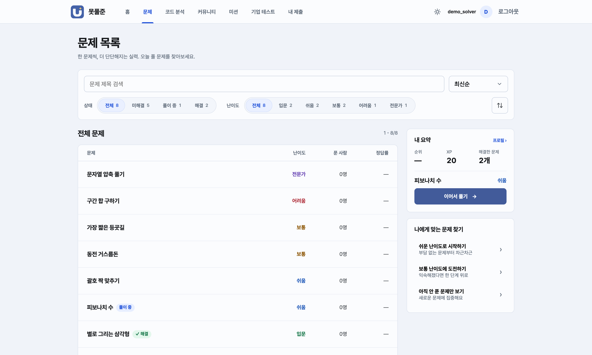
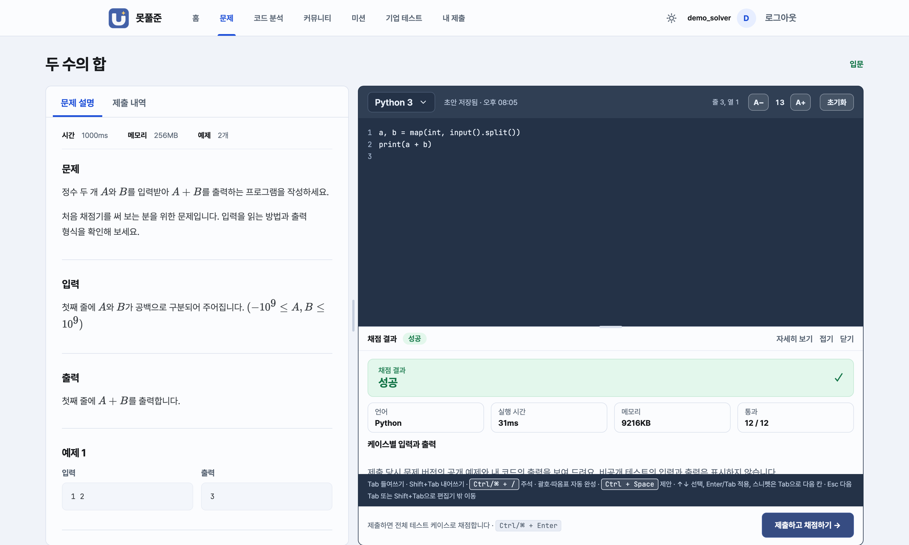
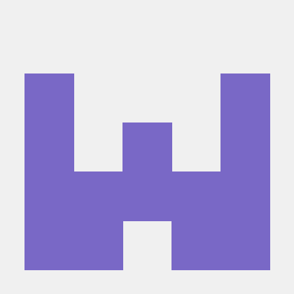
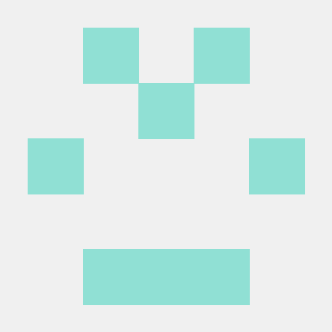
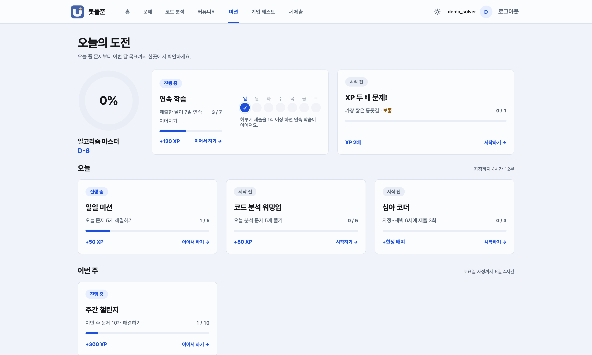
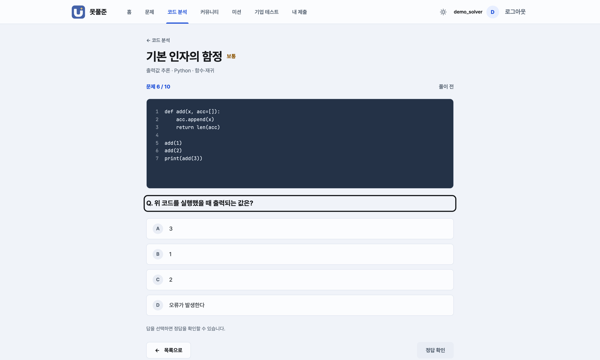

UnsolvableOJ
못풀준
문제를 풀고 코드를 내면,
격리된 채점기가 바로 판정하는 온라인 저지


멘토링 프로젝트 중간발표 · 2026년 10월김동혁 · 김성윤 · 김현민 · 장원준
네 명이 화면과 채점을 나눠 맡았습니다
김동혁
백엔드 · OJ 채점기 · 구상
API부터 채점 파이프라인, CI까지 서비스의 뼈대를 세웠습니다
- go-judge 격리 채점 전환 #6
- 채점 · XP · 초안 복구 안정화 #10
@yakisoba0728

김성윤
프론트엔드 · UI/UX · 구상
Figma 시안을 실제 화면으로 옮기고 쓰는 느낌을 다듬었습니다
- UI/UX 개편 · 커뮤니티 #3
- 채점 패널 · 자동 완성 재작성 #5
@PROMISE282
김현민 팀장
프론트엔드 · UI/UX
팀을 이끌며 홈 대시보드와 확장 기능 화면을 만들었습니다
- 디자인 토큰 · Docker 구성
- 코드 분석 · 미션 · 기업 테스트 #20
@nalak1206

장원준
백엔드
제출 실행 출력과 채점 흐름 검증을 맡았습니다
- 실행 출력 · 채점 디버깅 #2
- 커뮤니티 API 연동 (진행 중)
@wonjun0000
4주 동안 화면부터 격리 채점기까지 직접 만들었습니다
268
커밋 저장한 작업 기록 · 9월 28일부터
화면 · 서버 · 채점기 · 자동 검사를 외부 채점 서비스 없이 처음부터 만들었습니다 · 10월 25일 기준
틀리면 이유를 보여 주고, 고치면 바로 통과합니다
실제 화면을 녹화한 영상입니다. 채점 결과는 데모 데이터예요.
핵심 기능은 모두 동작하고, 새 기능 넷은 화면까지 완성했습니다
실제로 저장되고 동작하는 기능
회원가입 · 로그인과 권한일반 사용자 · 문제 출제자 · 관리자
문제 출제와 수정고칠 때마다 이전 버전을 남기고, 공개는 관리자가 확인
코드 제출과 자동 채점결과 · 실행 시간 · 메모리 · 예제 출력
XP · 레벨 · 랭킹, 학습 기록문제마다 처음 맞혔을 때만 난이도별 XP
관리자 기능 (서버 쪽)권한 변경 · 변경 기록 · 운영 현황 · 다시 채점


코드 분석 · 미션 · 커뮤니티 · 기업 테스트는 화면을 먼저 완성했어요. 지금은 기록이 이 컴퓨터의 브라우저에만 남고, 다음 단계에서 서버로 옮깁니다.
4주차에 각자 만든 기능을 하나로 합쳤습니다
1934주차10.19 – 10.25
작업 묶음(PR) 17개를
이 주에 합쳐 정리
주차별 커밋(작업 기록) 수 · 작성 날짜 기준
1주차
서버 · 채점 흐름 · 자동 검사의 뼈대
4주차
화면 개편 · 채점기 교체 · 정리 작업 10개
561
큰 변경을 합치기 전 통과한
세 브라우저 자동 검사
화면 · 서버 · 채점기, 세 부분으로 나눠 만들었습니다
개발 · 검사 도구Docker ComposeGitHub Actions CIPlaywright · 3개 브라우저VitestSentryMarkdown + KaTeX
눈에 잘 안 띄는 곳의 버그까지 찾아 고쳤습니다
01
깨진 글자 하나에 채점 결과가 바뀔 수 있었다
프로그램 출력을 주고받는 과정에서 깨진 글자가 다른 글자로 바뀌면, 같은 답도 다르게 볼 수 있었습니다.
출력을 글자로 바꾸지 않고 원래 바이트 그대로 비교합니다.
02
목록을 넘기는 사이 문제가 밀릴 수 있었다
"21번째부터 20개"처럼 가져오면, 그사이 새 문제가 올라올 때 다음 쪽에서 하나가 밀리거나 빠집니다.
"마지막으로 본 것 다음부터" 가져오도록 바꾸고, 시각을 백만분의 1초까지 기억합니다.
03
첫 화면이 무거웠다
처음 접속할 때 모든 화면의 코드를 한꺼번에 내려받았습니다.
화면마다 코드를 나눠 처음 받는 양을 503KB → 317KB로 줄였습니다 (압축하면 159KB → 102KB). #3
04
업데이트 직후 열려 있던 탭이 깨질 수 있었다
새 버전을 올리면 예전 화면 파일이 사라지는데, 서버가 엉뚱한 파일을 돌려줘 화면을 불러오지 못했습니다.
없는 파일은 "없음(404)"으로 정확히 답하고, 그때는 한 번만 새로고침합니다.
큰 변경은 세 브라우저 자동 검사 561개 · 실제 채점 흐름 15개 · 격리 실행 24개를 모두 통과한 뒤 합쳤습니다 #10
남은 3주, 모든 기능을 서버에 연결합니다
5주차
10.26 – 11.1
- 커뮤니티를 서버에 연결따로 진행 중인 작업 합치기
- 코드 분석 · 미션 기록을 서버에 저장
6주차
11.2 – 11.8
- 기업 테스트를 서버에 저장
- 관리자 화면다시 채점 · 권한 · 변경 기록
- 서버에서 검색 · 통계 계산
7주차
11.9 – 11.15
- 비밀번호 재설정 · 로그인 유지
- 채점기를 별도 컴퓨터로 분리전용 Linux 서버에 배포
- 전체 흐름 최종 점검
11.16 월
최종 발표
모든 기능이 서버에 연결된 완성본